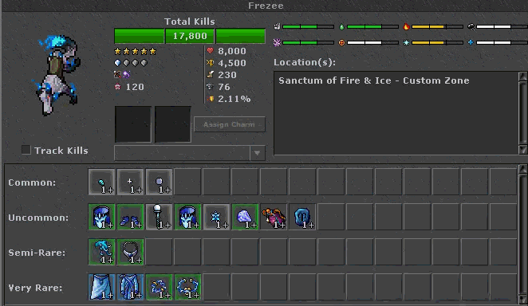
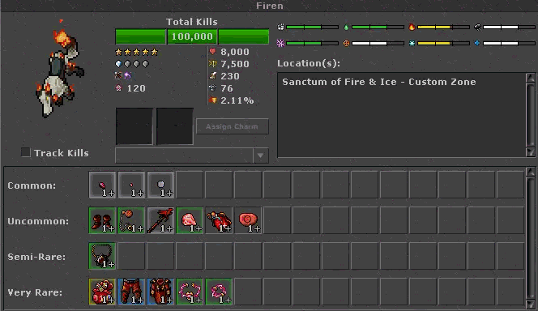
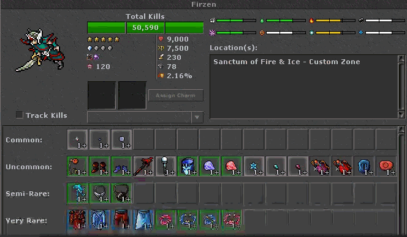

AvaloriumOT
Hunts custom, do Firzen aos Fallen
Guia das hunts exclusivas, na ordem de acesso: Sanctum of Fire & Ice, Pyramid of Azhr'khal, Outer Void, Netherbound e The Fallen Usurpers. Cada bloco traz criaturas, mix de dano, resistências, cura e a tabela de loot.
Como ler os números
Mapa de acesso
| Hunt | Level | Hazard | Criaturas |
|---|---|---|---|
| Sanctum of Fire & Ice | 300 | — | Frezee, Firen, Firzen |
| New Elfs Firzen | 800 | 10 | mesmo bestiário do Sanctum |
| Pyramid of Azhr'khal | 900 | 10 | True Cursed, Blessed e Enrage Asura |
| Outer Void + Netherbound | 1.000 | 12 | Void e Netherbound, mais o boss Zy'Thar |
| The Fallen Usurpers | 1.200 | 10 | Knight, Archer, Warlock, Commander, Lion Beast e Azkalon |
Hunt 1 · level 300 · VIP
Sanctum of Fire & Ice
Zona de humanoides de fogo e gelo. O portal “elf fire e ice” abre no level 300. O portal “New Elfs Firzen” pede level 800 e hazard 10. O bestiário das três criaturas aponta para o Sanctum of Fire & Ice. Firzen é o alvo mais perigoso: mistura os dois elementos, paralisa e se cura.
Os três compartilham o mesmo perfil elemental: físico, energia e terra −5%, fogo e gelo +15%. Imunes a paralisia e enxergam invisibilidade. Stone bag nível 1 sai a 0,02% em todos.
Frezee
corpo a corpo
Dano. Teto perto de 900 por segundo. Mix aproximado: gelo 57%, físico 43%.
- Melee físico até 1.000
- Ice strike 900–1.200, alcance 7
- Icicle berserker 1.100–1.400, área raio 3
- Smokeball de gelo 900–1.200, área no alvo
- Feixe de gelo 900–1.200, comprimento 5
- Ice chain 1.100–1.400
Sem cura. Imune a troca de outfit.
| Drop | Chance | Qtd. |
|---|---|---|
| Crystal coin | 44,80% | 1–2 |
| Small enchanted sapphire | 29,50% | 2–3 |
| Cyan crystal fragment | 14,75% | 1–3 |
| Avalanche rune | 9,95% | 5–9 |
| Ultimate mana potion | 9,31% | 1 |
| Blue gem | 7,08% | 1–2 |
| Ice flower | 5,31% | 1–3 |
| Glacier mask | 3,54% | 1 |
| Moonlight rod | 3,19% | 1 |
| Glacier shoes | 3,10% | 1 |
| Glacier amulet | 1,73% | 1 |
| Northwind rod | 1,39% | 1 |
| Ring of blue plasma | 0,53% | 1 |
| Collar of blue plasma | 0,53% | 1 |
| Glacier robe | 0,20% | 1 |
| Glacier kilt | 0,20% | 1 |
| Stone bag nível 1 | 0,02% | 1 |
Firen
corpo a corpo
Dano. Teto perto de 900 por segundo. Mix aproximado: fogo 67%, físico 33%.
- Melee físico até 1.000
- Flame strike 900–1.200 a cada 1 s, alcance 7
- Fireball em cruz 1.100–1.400, raio 2
- Blast ball 900–1.200, área raio 3
- Fire berserk 900–1.200, área raio 3
- Fire chain 1.100–1.400
Sem cura. Imune a troca de outfit. Troca de alvo com peso em quem está com pouca vida e em quem causa mais dano.
| Drop | Chance | Qtd. |
|---|---|---|
| Crystal coin | 42,67% | 1–2 |
| Small enchanted ruby | 27,36% | 2–3 |
| Red crystal fragment | 13,68% | 1–2 |
| Great fireball rune | 9,95% | 3–7 |
| Ultimate health potion | 9,31% | 1 |
| Red gem | 5,47% | 1–2 |
| Wand of dragonbreath | 2,96% | 1 |
| Magma monocle | 2,88% | 1 |
| Magma boots | 2,88% | 1 |
| Magma amulet | 1,61% | 1 |
| Collar of red plasma | 0,49% | 1 |
| Ring of red plasma | 0,49% | 1 |
| Magma legs | 0,18% | 1 |
| Magma coat | 0,18% | 1 |
| Stone bag nível 1 | 0,02% | 1 |
Firzen
híbrido fogo e gelo
Dano. Teto perto de 1.100 por segundo. Mix aproximado: gelo 39%, fogo 32%, físico 29%.
- Melee físico até 1.100
- Ice strike 1.000–1.300
- Icicle berserker 1.100–1.400, área raio 3
- Smokeball de gelo 900–1.200
- Feixe de gelo 900–1.200
- Flame strike 900–1.200 a cada 1 s
- Fireball em cruz 1.000–1.300
- Blast ball e fire berserk 900–1.200
- Fireice chain: 500–800 por salto, alternando gelo e fogo, até 4 saltos
- Paralisia −600 de velocidade por 20 s
Defesa. Cura 600–1.100 com 25% de chance a cada 2 s. Pode ser iludido.
| Drop | Chance | Qtd. |
|---|---|---|
| Crystal coin | 38,69% | 1–2 |
| Small enchanted sapphire | 24,18% | 2–5 |
| Small enchanted ruby | 24,18% | 2–5 |
| Avalanche rune | 16,85% | 7–15 |
| Great fireball rune | 16,85% | 7–15 |
| Ultimate mana potion | 15,78% | 1 |
| Ultimate health potion | 15,78% | 1 |
| Cyan crystal fragment | 4,84% | 2–5 |
| Red crystal fragment | 4,84% | 2–3 |
| Ice flower | 4,35% | 1–5 |
| Blue gem | 3,87% | 1–2 |
| Red gem | 3,87% | 1–3 |
| Glacier mask | 2,90% | 1 |
| Moonlight rod / wand of dragonbreath | 2,61% | 1 |
| Glacier shoes / magma monocle / magma boots | 2,54% | 1 |
| Glacier amulet / magma amulet | 1,42% | 1 |
| Northwind rod | 1,14% | 1 |
| Ring e collar de plasma azul ou vermelho | 0,44% cada | 1 |
| Glacier robe, glacier kilt, magma legs, magma coat | 0,16% cada | 1 |
| Stone bag nível 1 | 0,02% | 1 |
Hunt 2 · level 900 · hazard 10 · VIP
Pyramid of Azhr'khal
Três asuras verdadeiras, cada uma com um elemento dominante e uma fraqueza clara. Vida alta para o nível de experiência: 49.200 de HP e 24.300 de exp nas três. Armadura 110, defesa 110, mitigação 3,10, velocidade 250 a 265. Stone bag nível 1 a 0,03%.
True Cursed Asura
morte
Dano. Morte 55%, físico 30%, life drain 15%.
- Melee até 2.060 e maldição de 11.200 ao longo do tempo
- Death no alvo 2.300–2.900, alcance 7
- Death em área raio 3, 2.300–2.900
- Life drain em cruz 1.460–2.060
Defesa. Acelera +320 por 5 s com 50% de chance a cada 2 s. Sem cura direta.
| Drop | Chance | Qtd. |
|---|---|---|
| Crystal coin | 44,12% | 1–2 |
| Gold ingot | 14,71% | 1 |
| Undead heart | 11,61% | 4–8 |
| Demonic essence | 9,75% | 4–9 |
| Knight armor | 6,97% | 1 |
| Golden lotus brooch | 3,48% | 1 |
| Peacock feather fan | 3,14% | 1–3 |
| Skullcracker armor | 0,52% | 1 |
| Stone bag nível 1 | 0,03% | 1 |
| Tainted heart | 0,01% | 1 |
True Blessed Asura
sagrado
Dano. Físico 50%, sagrado 42%, life drain 8%.
- Melee até 2.020
- Holy no alvo 1.950–2.490
- Holy em área 1.300–1.660, raio 4
- Holy em cruz 2.130–2.490
- Life drain em onda 1.130–1.420
- Lentidão −100 por 3 s
Defesa. Cura 200–400 (15%) e acelera +320 por 5 s (15%).
| Drop | Chance | Qtd. |
|---|---|---|
| Platinum coin | 42,66% | 20–32 |
| Crystal coin | 42,66% | 1–2 |
| Small topaz | 14,22% | 4–13 |
| Gold ingot | 14,22% | 1 |
| Golden lotus brooch | 6,74% | 1 |
| Golden armor / crusader helmet | 3,41% cada | 1 |
| Demonic essence | 3,37% | 1–3 |
| Peacock feather fan / small diamond | 3,03% | 1–3 / 3–9 |
| Yellow gem | 2,43% | 1–5 |
| Stone bag nível 1 | 0,03% | 1 |
True Enrage Asura
físico
Dano. Físico 65%, life drain 35%. Derruba magic walls.
- Melee até 1.770
- Físico no alvo 2.130–2.710
- Físico em área raio 4, 1.660–2.240
- Life drain em área 1.230–1.840
- Sparks chain 1.660–2.240
Defesa. Cura 250–500 (15%) e acelera +320 por 5 s (15%).
| Drop | Chance | Qtd. |
|---|---|---|
| Platinum coin | 47,69% | 13–32 |
| Crystal coin | 47,68% | 1–2 |
| Golden lotus brooch | 15,90% | 1–6 |
| Peacock feather fan | 10,54% | 1–3 |
| Bloodshot giant eye | 10,50% | 1 |
| Crown legs | 3,77% | 1 |
| Crusader helmet | 3,39% | 1 |
| Giant sword | 0,56% | 1 |
| Stone bag nível 1 | 0,03% | 1 |
| Darklight heart | 0,01% | 1 |
Hunt 3 · level 1.000 · hazard 12 · VIP
Void Corruption Depths — Outer Void
Primeira zona do abismo. Mortos-vivos com morte em +50% e gelo ou terra como fraqueza. Armadura 120, defesa 120, mitigação 2,75. Bag You Desire a 0,005% e stone bag nível 1 a 0,04% nas três.
Void Demon Ravager
corpo a corpo
Dano. Físico 62,5%, fogo 18,5%, energia 14%, life drain 5%. Derruba magic walls.
- Melee até 2.250
- Broodriderewave 2.540–3.250
- Life drain em linha 2.540–3.250
- Físico em área 2.830–3.300, raio 4
- Energia à distância 2.590–3.300
Defesa. Cura 100–625 com 50% a cada 2 s e acelera +800 por 5 s (35%).
| Drop | Chance | Qtd. |
|---|---|---|
| Ultimate health potion | 43,75% | 1–5 |
| Ultimate mana potion | 37,50% | 1–4 |
| Crystal coin | 29,95% | 1–2 |
| Small ruby | 20,59% | 1–25 |
| Small sapphire, red gem, blue gem, green gem | 18,72% cada | 1–25 / 1–4 |
| Shadow sceptre | 8,89% | 1 |
| Golden armor | 3,74% | 1 |
| Skull helmet | 2,34% | 1 |
| Demon shield | 1,87% | 1 |
| Bloody edge | 1,69% | 1 |
| Stone bag nível 1 | 0,04% | 1 |
| Pinkdemon heart | 0,013% | 1 |
| Bag You Desire | 0,005% | 1 |
Void Brute Corrupted
corpo a corpo
Dano. Físico 60%, morte 18%, energia 14%, life drain 8%.
- Melee até 2.050
- Físico em área 2.840–3.620, raio 4
- Energia no alvo 2.230–3.020
- Death chain 2.230–3.020
- Sparks chain 1.700–2.530
- Lentidão −800 por 30 s
Defesa. Cura 100–625 com 50% a cada 2 s.
| Drop | Chance | Qtd. |
|---|---|---|
| Ultimate mana potion | 39,00% | 1–4 |
| Darklight basalt chunk | 35,75% | 1 |
| Crystal coin | 29,10% | 1–2 |
| Strange helmet | 28,37% | 1 |
| Small topaz | 19,86% | 1–26 |
| Blue gem / small emerald | 18,91% | 1–4 / 1–26 |
| Knight legs | 12,77% | 1 |
| Magma clump | 12,29% | 1–7 |
| White gem | 11,35% | 1–4 |
| Knight armor | 8,98% | 1 |
| Tower shield | 4,73% | 1 |
| Stone bag nível 1 | 0,04% | 1 |
| Bag You Desire | 0,005% | 1 |
Void Riftcaster
distância 3
Dano. Energia 60%, físico 25%, morte 11%, fogo 4%. O caster de maior alcance da zona.
- Melee até 2.480
- Death em onda 3.320–4.200
- Energia no alvo 3.210–4.060, raio 4
- Energia em área raio 8, 2.020–2.850
- Extended energy chain 2.040–2.880
- Large pink ring 3.270–4.130
- Energy barrage 2.080–2.930
Defesa. Cura forte: 1.000–2.225 com 20% a cada 2 s.
| Drop | Chance | Qtd. |
|---|---|---|
| Dark obsidian splinter | 33,75% | 1 |
| Ultimate health potion | 33,75% | 1–4 |
| Ultimate mana potion | 30,38% | 1–4 |
| Crystal coin | 28,11% | 1–2 |
| Blue gem | 20,88% | 1–4 |
| Violet gem | 19,17% | 1–4 |
| Onyx chip | 11,39% | 1–27 |
| Small sapphire | 8,54% | 1–27 |
| White gem | 5,69% | 1–4 |
| Spellbook of enlightenment | 4,84% | 1 |
| Skull helmet / oriental shoes | 1,90% | 1 |
| Golden armor | 1,14% | 1 |
| Crystalline armor | 0,24% | 1 |
| Stone bag nível 1 | 0,04% | 1 |
| Bag You Desire | 0,005% | 1 |
Hunt 4 · mesmo portal · level 1.000 · hazard 12
Void Corruption Depths — Netherbound
Segunda zona, mais vida e golpes mais altos. O dragão e o cérebro usam terra; o demônio usa sagrado e físico. Crystal coin a 60% (2–4) nas três. Primal bag a 0,01% e stone bag nível 1 a 0,05%.
Netherbound Demon
corpo a corpo
Dano. Sagrado 45%, físico 35%, life drain 20%. Derruba magic walls.
- Melee até 2.810
- Holy em área raio 8, 3.180–4.060
- Holy no alvo 3.160–4.030
- Físico em área raio 6, 3.590–4.200
- Life drain em linha 3.130–3.990
Defesa. Cura 105–656 (50%) e acelera +840 por 5 s (35%).
| Drop | Chance | Qtd. |
|---|---|---|
| Crystal coin | 60% | 2–4 |
| Underworld rod | 40,20% | 1 |
| Supreme health potion | 31,25% | 1–6 |
| Ultimate mana potion | 28,75% | 1–5 |
| Blue gem | 21,75% | 1–4 |
| Red gem | 19,50% | 1–4 |
| Small ruby | 18,75% | 1–31 |
| Small sapphire / green gem | 17,25% | 1–31 / 1–4 |
| Demon shield | 3,45% | 1 |
| Golden armor | 3,08% | 1 |
| Giant sword / heavy mace | 2,93% | 1 |
| Stone bag nível 1 | 0,05% | 1 |
| Verdant heart | 0,013% | 1 |
| Primal bag | 0,01% | 1 |
Netherbound Dragon
terra
Dano. Terra 55%, físico 30%, morte 15%. O ataque básico já é terra. Derruba magic walls.
- Golpe de terra até 2.670
- Terra em área raio 6, 4.010–5.130
- Físico em área 2.950–3.990
- Extended death chain 3.100–4.190
- Lentidão −800 por 20 s
Defesa. Cura 200–700 com 40% a cada 2 s.
| Drop | Chance | Qtd. |
|---|---|---|
| Crystal coin / small emerald / small topaz | 60% | 2–4 / 1–26 |
| Magma clump | 42,86% | 1–5 |
| Ultimate mana potion | 30,94% | 1–7 |
| Darklight basalt chunk | 29,45% | 1 |
| Blue gem | 16,77% | 1–7 |
| White gem | 14,98% | 1–7 |
| Dragon lance | 1,08% | 1 |
| Royal helmet | 9,77% | 1 |
| Dragon slayer | 9,59% | 1 |
| Dragon scale mail | 3,18% | 1 |
| Stone bag nível 1 | 0,05% | 1 |
| Primal bag | 0,01% | 1 |
Netherbound Brain
distância 4
Dano. Terra 70%, morte 20%, físico 10%. Prioriza quem está ferido e quem causa mais dano.
- Melee até 3.350
- Terra no alvo 4.190–5.300
- Terra em área raio 5, 4.680–5.910
- Death em onda a cada 4 s, 4.380–5.530
- Large death ring 4.640–5.870
- Earth barrage 2.860–4.020
- Extended death chain 2.740–3.850
Defesa. Cura 1.100–2.300 com 18% a cada 2 s.
| Drop | Chance | Qtd. |
|---|---|---|
| Crystal coin | 60% | 2–4 |
| Terra rod | 37,58% | 1 |
| Dark obsidian splinter | 31,05% | 1 |
| Ultimate health potion | 29,70% | 1–5 |
| Ultimate mana potion | 28,35% | 1–5 |
| Blue gem | 21,06% | 1–7 |
| Onyx chip | 20,25% | 1–20 |
| Violet gem | 18,63% | 1–7 |
| Small sapphire | 17,01% | 1–7 |
| White gem | 14,58% | 1–3 |
| Inkwell | 12,31% | 1–5 |
| Skull helmet | 3,40% | 1 |
| Spellbook of enlightenment | 3,08% | 1 |
| Golden armor | 2,84% | 1 |
| Piece of dead brain | 1,75% | 1 |
| Greenwood coat | 0,73% | 1 |
| Stone bag nível 1 | 0,05% | 1 |
| Primal bag | 0,01% | 1 |
Boss da Void Corruption Depths · archfoe
Zy'Thar
Todos os elementos em +25%. Imune a paralisia e enxerga invisibilidade. Cura 6.250–8.750 (30% a cada 2 s) e acelera +700 por 6 s. Invoca até 4 criaturas: Netherbound Demon e Void Demon Ravager.
Dano base. Mix aproximado morte 50%, gelo 40%, físico 10%. Teto perto de 3.040 por segundo, fora do Doom.
- Melee 3.170–4.420
- Ice cataclysm 3.100–4.790, área raio 6 no alvo
- Death beam 3.380–5.070, linha de 8 sqm
- Ring of ice 4.030–6.050
- Frozen spear 4.110–5.890 no alvo
- Soul rupture 3.930–5.900, área raio 6
Doom, a cada cerca de 6 s, escolhe um dos quatro ataques telegrafados:
- Abyssal Meteor (morte): marca a área do alvo e cai 5.600–9.600 em 5×5.
- Frozen Downpour (gelo): 6 impactos de 3.680–6.170 em 3×3 que seguem o alvo. Com 30% de vida ou menos, sobe para 8 impactos.
- Blighted Bloom (terra): anéis que abrem a partir do alvo, 3.900–6.900. O primeiro anel é um 3×3 cheio; os seguintes são só a borda, até raio 4. A folga entre os anéis é o espaço seguro.
- Void Cataclysm (morte): só com 30% de vida ou menos. Cinco ondas de impactos aleatórios num raio de 6 sqm ao redor do boss, 4.680–8.580 por golpe.
| Drop | Chance | Qtd. |
|---|---|---|
| Crystal coin | 60% | até 200 |
| Supreme health potion | 55% | até 300 |
| Ultimate mana potion | 55% | até 300 |
| Ultimate spirit potion | 52% | até 300 |
| Blue, red, violet e yellow gem; giant amethyst, emerald, ruby, sapphire e topaz | 50% cada | até 20 |
| Cobalt ridge, darklight figurine, dragon figurine | 50% | 1 |
| Fiery tear | 50% | até 10 |
| Golden raid token | 1,20% | 1–5 |
| Pinkdemon heart / verdant heart | 1,00% cada | 1 |
| Primal bag / Bag You Desire | 0,70% | 1 |
| Special bag / Bag You Covet | 0,50% | 1 |
| Void upgrade | 0,10% | 1 |
| Corrupted void bag | 0,05% | 1, unique |
Hunt 5 · level 1.200 · hazard 10 · VIP
The Fallen Usurpers
Humanos e a fera do leão caído. A defesa elemental é baixa: a pressão vem da cura alta e dos números de dano. Quase todos curam milhares por tick. Morte é a fraqueza recorrente (−5% ou −10%). Special stone material sai por volta de 0,02% e stone bag nível 1 a 0,06%.
Fallen Usurper Knight
corpo a corpo
Dano. Físico ~86%, fogo ~14%. Troca de alvo com frequência (40%).
- Melee até 3.510
- Físico no alvo 4.010–5.120
- Fogo em área raio 4, 3.940–5.030
- Físico em área raio 3, 4.340–5.080
Defesa. Cura 7.750–13.950 com 35% a cada 2 s.
| Drop | Chance | Qtd. |
|---|---|---|
| Crystal coin | 70% | 1–2 |
| Lion crest | 70% | 19–44 |
| Gold ingot | 48,82% | 1 |
| Red gem / blue gem | 24,50% | 1–9 |
| Green gem | 19,25% | 1–9 |
| Violet gem | 15,75% | 1–9 |
| Lion cloak patch | 9,79% | 1 |
| Stone bag nível 1 | 0,06% | 1 |
| Special stone material | 0,019% | 1 |
Fallen Usurper Archer
distância 3
Dano. Físico ~78%, fogo ~22%. O ataque básico já é um tiro físico até 3.470.
- Fogo no alvo 4.920–6.290, alcance 7
- Físico em área no alvo 4.960–6.340, raio 4
Defesa. Cura 7.700–11.550 com 28% a cada 2 s. Mitigação 3,10.
| Drop | Chance | Qtd. |
|---|---|---|
| Ultimate health potion | 100% | até 4 |
| Meat | 80,62% | 1 |
| Crystal coin | 70% | 1–2 |
| Elvish bow | 27,35% | 1 |
| Red gem / blue gem | 25,48% | 1–9 |
| Assassin dagger | 20,12% | 1 |
| Green gem | 20,02% | 1–9 |
| Broken longbow | 17,27% | 3–7 |
| Violet gem | 16,38% | 1–9 |
| Lion cloak patch | 11,99% | 1 |
| Black pearl | 10,39% | 7–20 |
| Ornate crossbow | 9,31% | 1 |
| Emerald bangle | 9,15% | 1 |
| Coral brooch | 2,08% | 1 |
| Stone bag nível 1 | 0,06% | 1 |
| Special stone material | 0,02% | 1 |
Fallen Usurper Commander
corpo a corpo
Dano. Físico ~72%, life drain ~28%. Derruba magic walls. Mitigação 3,40, a mais alta da hunt.
- Melee até 4.520
- Físico em onda 6.060–7.670
- Físico em área raio 3, 6.060–7.670
- Life drain em X, 5.860–7.410
- Sparks chain 3.850–5.420
Defesa. Cura 7.650–14.540 com 40% a cada 2 s.
| Drop | Chance | Qtd. |
|---|---|---|
| Crystal coin | 70% | 1–2 |
| War axe | 27,41% | 1 |
| Red gem / blue gem | 26,46% | 1–20 |
| Green gem | 20,79% | 1–20 |
| Violet gem | 17,01% | 1–20 |
| Lion crest | 15,12% | 1 |
| Golden legs | 8,51% | 1 |
| Magic plate armor | 5,67% | 1 |
| Giant sword | 4,73% | 1 |
| Stone bag nível 1 | 0,06% | 1 |
| Special stone material | 0,02% | 1 |
Fallen Lion Beast
sangramento
Dano. Físico ~54%, sangramento ~46%.
- Melee até 3.470
- Físico em área 4.920–6.290 (45% a cada 2 s)
- Lentidão −900 por 5 s, raio 2
- Sangramento em área raio 3: 28.380
Defesa. Cura 4.940–9.170 com 28% a cada 2 s. Imune a sangramento. Fraqueza em fogo.
| Drop | Chance | Qtd. |
|---|---|---|
| Crystal coin | 70% | 1–2 |
| Red gem | 20,79% | 1–3 |
| Blue gem | 18,90% | 1–3 |
| Green gem | 17,01% | 1–3 |
| Lion crest | 10,40% | 20–47 |
| Warrior helmet | 5,67% | 1 |
| Stone bag nível 1 | 0,06% | 1 |
| Special stone material | 0,02% | 1 |
Fallen Usurper Warlock
distância 3
Dano. Energia ~65%, fogo ~35%. O ataque básico é energia até 4.520. Foca quem causa mais dano.
- Fogo no alvo 5.810–7.350, raio 4
- Energia no alvo 6.060–7.670, raio 4
- Extended energy chain 3.790–5.330
Defesa. Cura 10.010–17.880 com 35% a cada 2 s e fica invisível (20%).
| Drop | Chance | Qtd. |
|---|---|---|
| Crystal coin | 70% | 1–2 |
| Underworld rod | 70% | 1 |
| Blue robe | 70% | 1 |
| Red gem | 20,79% | 1–3 |
| Blue gem | 18,90% | 1–3 |
| Green gem | 17,01% | 1–3 |
| Lion cloak patch | 7,98% | 1 |
| Lion crest | 7,77% | 1 |
| Stone bag nível 1 | 0,06% | 1 |
| Special stone material | 0,02% | 1 |
Boss · archfoe · 10.000.000 de vida
Azkalon, The Fallen Usurper King
Todos os elementos em +25%. Cura 12.000–25.000 (25% a cada 2 s) e acelera +1.200 por 7 s. Durante a luta invoca até 4 criaturas entre Knight, Archer e Warlock.
Dano. Mix aproximado: morte 40%, gelo 25%, físico 20%, life drain 8%, mana drain 7%. Teto perto de 12.500 por segundo.
- Melee 4.500–8.200
- Death explosion 6.500–9.800, raio 6
- Ice wave 6.200–9.200, comprimento 8
- Fallen nova física 5.800–8.800, raio 7
- Death beam 7.000–10.500, linha de 10 sqm
- Ice prison 5.500–8.500 no alvo, raio 5
- Soul rupture 8.000–12.000, raio 8
- Void consumption: mana drain 5.000–8.000, raio 8
- Blood of the Fallen: life drain 7.000–10.000, raio 9
- Crushing blow físico 6.000–9.000
Fases da guarda real
Ao chegar em 60% e de novo em 30% de vida, Azkalon fica imune a dano e chama quatro Fallen Royal Broodlings. A imunidade cai quando os quatro morrem. Se um broodling morre com o boss dentro da explosão, Azkalon recupera 10% da vida máxima (“Azkalon absorbs the fallen essence!”). Matar a guarda longe do rei evita essa cura.
Fallen Royal Broodling
invocação de faseSem loot e sem corpo. Dano em cerca de metade do rei: waves longas de gelo, fogo, energia e morte, mais áreas de terra, sagrado, mana drain e life drain. Melee 2.250–4.100. O golpe mais alto da ficha é Soul Rupture, 4.000–6.000 em raio 8. Cura 6.000–12.500. Todos os elementos em +15%. Ao morrer, explode numa área larga.
| Drop de Azkalon | Chance | Qtd. |
|---|---|---|
| Master usurper essence | 100% | 1 |
| Crystal coin (duas pilhas) | 100% cada | 85–100 e 82–100 |
| Giant ruby, emerald, sapphire, amethyst e topaz | 50% cada | 5–15 |
| Boss token | 25% | 7–15 |
| Expert WZ token | 25% | 1–2 |
| Primal bag / Bag You Desire | 0,70% | 1 |
| Bag You Covet | 0,50% | 1 |
| Special bag | 0,30% | 1 |
| Sanguine upgrade | 0,08% | 1 |
| Corrupted void bag | 0,01% | 1 |